Table of Contents
Biking
- Better yet, be assertive and take up the lane when needed. Don't let cars needle pass you. And communicate well with a thank you. http://cyclingsavvy.org
- Promising DIY bicycle fenders: https://bicycleobsession.wordpress.com/2013/03/03/turn-two-plastic-bottles-and-a-hanger-into-the-worlds-best-diy-bicycle-fenders/
- Can probably make teeth in the insertion so they don't come out. Removes need for wire.
10? Uncommon Bicycle Things
10? “advanced” bike things
- Basics, helmet, maintenance, clothes planning, why. Helmet has limits, is a good compromise: https://helmets.org/limits.htm
- No backpack
- Expect people to not see you. For examples see my playlist or numerous other ones. It's much less fun to be in an accident and probably have your essential expenses covered than to ride a bike another day without pain.
- People turning from right
- Small headlight (even blinking) is not very visible from off angles
- Reflectors are retro-reflective, not reflective at off angles.
- When passing cars on the right that are waiting at an intersection and the light turns green, don't rush through! Assume people won't signal and won't look to their right before turning. I balance it. Stop accelerating and make sure to be very visible in front of a car but behind the next car as you proceed through the intersection . (maybe best to show in video)
- Rain is great fun during the daytime, as long as you can take a shower at work! However, at night-time, standing water on ground can be very painful. Can't see potholes or debris in bike lane, even with motorcycle light. So just go slowly
- Related, your brake pads matter! Bad pads on disc brakes can easily be worse than good rim brakes, all of this in rainy weather! Kool Stop salmon come highly recommended. See: https://janheine.wordpress.com/2018/07/12/myth-12-disc-brakes-work-better-than-rim-brakes/
- Large obstacles on intersection corner make for huge blind spot for you and driver.
- Action camera. While it's likely that the authorities will side in your favor, for biking and in a car it's cheap insurance. Guaranteed accurate testimony.
- All the above tips won't save you from drivers looking at their phone/dash and in general not paying attention, so try to minimize the likelihood of being in that situation by:
- Avoiding long straightaways (Neighborhood streets with lots of curves are great)
- Lower collision speed
- Only downside with neighborhood is more cross streets and more braking preparation
- LEDs are not visible in daytime! Better to have big rotating fluorescent things in your wheels, but you can't really depend on anything…
Competition
- Nice bike spoke design. $60 + $10 shipping. XuanWheel X1 Colorful…. https://www.gearbest.com/bike-lights/pp_353629.html
- Kinda want to buy one just to see how they designed it, but then again I don't really need to. Good pictures on the website.
- Worth mentioning, useful for some folks.
- I like my light blink design better, for some reason. More dynamic and
- Lid Lights: $40 kit with basic tri-color LED strip with no customization, but maybe that's ok. http://www.lightmylid.com/Installation-of-lights-on-helmet.html
Resins
Coloring a clear white, acrylic paint looks good: https://www.resinobsession.com/resin-resin-resin/how-to-color-clear-epoxy-resin/
Suspension Losses
Good article…
Supple Tires
https://janheine.wordpress.com/2018/01/03/12-myths-in-cycling-1-wider-tires-are-slower/
(flexible tires sidewalls basically?) https://www.youtube.com/watch?v=kPzj9r2S270
- What does TPI mean? Higher doesn't mean better: https://janheine.wordpress.com/2015/01/05/tpi-and-tire-performance/
- What about panaracer instead? Not as good necessarily: https://janheine.wordpress.com/2018/03/06/how-are-compass-tires-different-from-panaracers/. But Paselas are pretty cheap too, and still supple.
Light Collimator
Or Lens. On amazon for pretty cheap.
US source: https://www.addicore.com/ProductDetails.asp?ProductCode=AD418&CartID=1
Trailer
For when you have extra groceries to buy or … ? Taking a car infrequently is pretty easy though.
- Dog box, collapsible.
Or child trailer. But sucky part is storing it. Somehow mount to ceiling.
Notes from Johnson Light Show
Vixen or xLights
- Seem to need to use an OS and external controllers. Can be as cheap as Raspberry Pi Zero
Screw connectors for waterproofing and strength.
Wemos D1 Mini is awesome. $4 each, and you get wifi, 4mb of flash, free webserver, etc. Wow.
- Has a diode to drop input 5V by .7V to 4.3V for the 5V pin. WS2812's are ok with running between 3.5V and 5V, and it allows you to control it at 3.3V! (.7*4.3 = 3.0V).
- Shouldn't be current leakage I don't think, but maybe read hackaday post comments? https://hackaday.com/2017/01/20/cheating-at-5v-ws2812-control-to-use-a-3-3v-data-line/#comment-3371665
- On slow boat, $1.82 in quantity 1: “Super seller For Arduino&3D Wemos D1 Mini”
- Use “LOLIN (WEMOS) D1 R2 & Mini” device in Arduino, + USBTinyISP programmer.
- Host its own wifi: https://www.youtube.com/watch?v=Q0eUoFIXrWE
- Create the app using App Inventor: https://www.youtube.com/watch?v=ZAqNKaX3LQ0
- Should be simplified. What zone/area is the module in, what's the module, and what overall light plan do you want?
- Should I use MicroPython? Benefits include remote debugging, script editing, and an emulator (but normal arduino gets that too). Not sure about FastLED support, but might not be strictly necessary.
- Upgrading to CircuitPython (Adafruit products only?) gets you a cool GUI with Mu https://codewith.mu/en/ and usb drive support. But not necessary in general since user can edit with web browser.
Also want to use FastLED. They do dithering and lots of cool patterns. Don't support RGBW, unfortunately 
- YouTube Link! https://www.youtube.com/watch?v=fjoDkqoU5Fk with yellow pool noodle. Free code!
- YouTube Link! https://www.youtube.com/watch?v=3zQ8qC1KQgU Also free code! And construction!
He uses Ray Wu's Alibaba page: https://www.aliexpress.com/store/701799. But prices aren't that much different for 5V led strips than ALITOVE on amazon
Ultraviolet UV
BBlack lights and tanning beds and UV leds all put out 320-400 nm UV light. (UVA).
Pretty sure more UV light is put out during the daytime w/ the sun than coming out of a black light, but want to avoid it long term. Also, avoid pointing it in your eyes / exposed skin too much.
Strobe LED Lights
How to overdrive LEDs to do your bidding.
I would buy a pack of 100 cheap 20mA UV leds because they basically have the same Voltage/Current curve as 3W leds (just divided by 10 or so), so they burn up roughly equivalently but draw a ton less current and are way cheaper to mess up with.
- Need to drive the lights at short flashing durations to freeze the spokes (<100us). However at 5V the light isn't very bright, assuming 1A is getting to it. How to brighten it
Use a capacitor to increase the current?Nope, tried it. The LED will only draw 1A at 5V. One can just wire several LEDs in series (christmas lights do this to drop AC voltage) and do away with a current limiting resistor, although you have to make sure thermal runaway won't affect your application (the turn-on voltage gets lower the hotter the LED is, drawing more current, heating it up, etc.).- So increase the voltage and duty cycle it. Yep! From: https://petermobbs.wordpress.com/2015/02/06/experiments-with-led-based-flash-gun-for-high-speed-photography/
- And if you don't have enough current to power the transients (my voltage regulator started to flicker and freak out), then you add a capacitor! 1000uf is good enough for one LED for a 100us pulse at 10A. I had the calulcation somewhere. A super capacitor has a lot more capacitance, but unfortunately only comes in low voltages (3V). Looks good, although super capacitor might not be necessary… This one (4F for $1)
- If you want it super bright, be sure to heat-sink it. Can use an aluminum sheet from … your grandfather and cut a small strip. Also doubles as a load distributor for mounting the LEDs to your forks.
I burnt out a lot of 3W leds discovering that 200us pulses of 12V from a battery are too long. The LED itself wasn't getting hot, but I think the bonding wire is not able to handle the high current for that long. Interesting… Going with 80us at full brightness (which is still kinda dim). To increase the brightness I'll need to lower the current through the wire. Might be able to get away with PWM mid-brightness for longer period.
- There's something about (I^2)*t value for a fuse, but that doesn't make sense because while I can only do 12V for 200us, I can do 5v indefinitely instead of say, 1000us.
- http://lednique.com/datasheet-current/ explains the maximum current of leds a little
- 3W UV led datasheet: http://www.qt-brightek.com/datasheet/QBHP682E-UVXXXS_series.pdf
- Might be able to derive the temperature of the bonding wire by the resistance increase (less current)
What size wire?
When will a current get high enough that you'll burn a wire? P = I^2 * R. So if you have a high resistance wire you'll need to dissapate the heat somehow. However the high resistance will also limit the amount of current that can flow… hm….
Anyways, 24 awg wire has 25 ohms resistance per 1000 feet. So .075 ohms for 3 feet. Normally at say 10 amps, that'd be 7.5 watts, way too hot. However, since we're duty cycling it hard core it's fine! Also, based on the V = I * R formula, at 12V our max current would be 160 amps. Cool, plenty of headroom.
Soldering
Turns out that you can solder 3W leds to wire hangers, and the hangers make great heat sinks too!
Since surface mount LEDs are routinely soldered on boards, they can handle 230 C for a little bit (soldering temperature). But try not to push it.
- Also we should really follow the ramp procedure below. YMMV.
From Cree, apparently this is a JEDEC spec! https://www.cree.com/led-components/media/documents/XLampMCE_SolderingandHandling.pdf 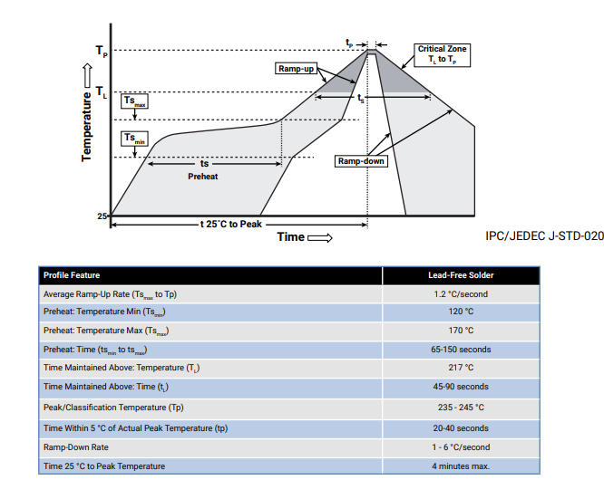
Code
- Need to have really accurate timing estimate of LED strips because it stops delayMicroseconds() and delay() from working right. I'm off by a factor of two somehow
- Really helpful to have an oscilloscope / logic analyzer for this, as you can get accurate timings of everything very easily just by pulsing a pin and commenting out everything except each section you're timing.
Backup
Sight Triangles
Fascinating. Hillsboro's code is basically “look at the aashto policy on geometric design of highways and streets spec”, see https://qcode.us/codes/hillsboro/view.php?topic=12-12_50-12_50_260.
But a good overview is probably this from Kennewick Washington. sightlines_kennewick.pdf
Or this one from cycling savvy (https://cyclingsavvy.org/road-cycling/#bikelane). Great review of defensive biking skills, including how it's safer to bike in the center of the driving lane when there's no good bike lane and there's another lane to pass with.
Might not be able to get much done in Hillsboro, but at least it's a thing. Bike lanes help a ton, so I'm not complaining really, but it's really important to stay aware.
Contacts for ideas and updates
Mr. Domes, Nate ——, Angus, Intel person, Mr. Ocker, E. Shriver, M. Lemay, jacob jun pan, Garrett C., Carley on wheelchair
Feedback
- More on what you tried that failed
- More pictures of …. don't remember
Oil / Lube
Engine oil is too viscous at room temperature, it has to heat up first. So not as penetrating as machine oil / gear oil.
Uncommon Bike Tips
Get a rear rack with panniers or buckets so you can ride more freely and cool off your body too! Evaporative cooling ;)
It's a great feeling to DIY something. You gain character and experience as you overcome obstacles. Also, you can make it exactly how you like it, and get to watch things as they fail! And refine your design, etc. Making one yourself and knowing how to fix it when it breaks! And it's only $30 worth in (soldering/hot gluing) supplies! And you can make something totally custom, like this…
Mounting
You can buy something for $10. (LAMPHUS Cruizer LED Off-Road Light Horizontal Bar Clamp Mounting Kit)
Or…something like this! (full clamp?)
- Very light, not much cutting needed. However, if you made one yourself, it might be difficult to get the grip strength compared to…
Hose clamp
Can use hose clamps (if really need rust-resistance, use 316 stainless steel) and put old inner tube on the inside against the bike handle for better grip.
Then drill a small hole on the spot where you want the bolt to come out. Then mount the bolt head against the bar and push the threads through the clamp out towards you. Bam. Clamped! Wonder how solid it will be!
21 other methods
"Advertising"
Might be useful to add a taped sticky note with website. “Make your own at nhergert.ozeo.org” / “Google it! DIY Light Bike”.
Heat sink
Turns out solder is 50x more conductive than thermal grease! The grease is used more often for easy removability and non-electrical-conductivity. But since I'm using a coat hanger, it's easy to remove later.
Also steel is only 1/2 the conductivity of aluminum? Cool.
https://en.wikipedia.org/wiki/List_of_thermal_conductivities
Electrical connectors
Needs to be splash-proof, handle lots of vibrations.
I like the ability of crimped connectors to strain relief on the housing instead of the wire.
vs.
Switches
Just go with a light switch. Plentiful, easy to use, cheap, and recognizable.
Ended up clearing the arduino bootloader maybe because of browning it out because of using a simple voltage divider in the below method.
It doesn't need to be a physically latching switch. You can use a momentary switch and a uC or a few more components. YouTube Link! https://www.youtube.com/watch?v=Foc9R0dC2iI
- “Soft latching power switch circuit”
- I prefer the arduino to maintain state, just because it's less components.
Final
Voltage divider to bring 12V down to 5V, both for <10V mosfet control (although 12v might work) and allowing the Arduino to read the 5V as input to know when to not keep itself on. Mosfet is inline with voltage divider to allow current to flow.
It can just be momentary to turn on the MOSFET that controls the voltage regulator. Then the arduino can keep itself latched until you press/hold the switch again to turn it off! No power to arduino and Low power for pull-down resistor on mosfet…
N-Fet or P-Fet
Generally want to use n-fet apparently because you can't control higher than 5V. https://www.espruino.com/mosfets
Water resistance
Cover it with plastic bag, kinda lame though.
Buy a box of rubber-covered small switches.
Or do the usual, which is make a small rubber … cover thing for the switch that the switch's pressure keeps it pushes on the backside against the circular edge.
Or somehow make a bond with plastic and rubber?
- Kinda cool, although easy to miss with gloves on.
- Can make with a 3d-printed box with a momentary switch inside and just a plastic button top. Don't need super water resistance as long as there's a hole for the water to drain out.
The alternative (a big button and most arcade buttons) is just so deep, need to be creative with mounting.
Maybe flat would work better…
How to See and Be Seen at night on a Bike
Mr. Domes
Should you even bike?
- As people get older, their pupils are not as able to let in light (dilate). Equivalent to a young person wearing a pair of sunglasses! Also get glazed over from cataracts.
- There are idiots! People are lost and look at their phones, or drive drunk. Or just don't look around, or don't care about hitting you.
- This can even happen when they're behind you in the bike lane too and can otherwise see you (swerving to side)
- Especially when it's raining and dark, it's really difficult to see stuff on the road. One poorly placed pinecone on your skinny road tires could be enough to tip you over and cause $15K easy just for screwing your elbow back together again! Of course insurance will probably cover it, but not sure if they'll raise your rates. That'll pay for a lot of public transit or Uber rides.
See
Most of the time at night, you're good enough with a 500 lumen light. However, when it's raining and the ground is covered with water, it's not good enough. <take a picture/video example, with a hose>. You can't see wet objects / that annoying pothole because the ground is reflecting the sky, which is black.
- I flipped over on my bike because of running into a chunk of black asphalt that had fallen off a truck earlier on a rainy evening. It's pretty rare, but it happens. Paying $50 more to avoid this or just riding slower is very cheap medical insurance

What light?
For really good visibility you want >1000 lumens spread out over 8-10 feet ahead of you.
- Most cheap (<$25) bike-specific lights on amazon are only 500 lumens at best. So “6000” lumens is only 500 at best.
- You can probably further classify them by Cree chip id. Maybe it has lumens output?
- Another way to tell is to see what the wattage output is (volts * current draw). Most LEDs are 50-100 lumens per watt, so if a 5V setup is drawing < 1 amp, then it's going to be max 500 lumens, not bright enough.
So…what about lights for cars or motorcycles?!
- It requires a 12V battery or a voltage converter
- But on the plus side it'll probably be a lot brighter! Check the reviews for current draw. 12V * 1 amp is 12W, or around 1000 lumens!
- Multiple modes probably isn't necessary and is at worst dangerous. See motorcyclist that didn't do a great wiring job and has to restart his motorcycle to change the lighting mode. Also any noise on the system (bumps, jolts) changes the mode during the ride >.<
- Gamma correction. Double the current doesn't mean double the (apparent) brightness.
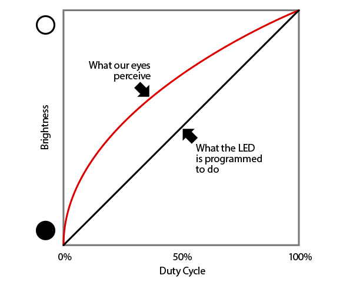 https://learn.adafruit.com/led-tricks-gamma-correction/the-issue
Battery
Can buy 12V Lipo battery packs with an included charger for $30, 5000mah. Unfortunately looks like they're current limited to 3A. Hmmm, might need to rewire some things.
Lights I tried
You want to have a focused beam so you don't blind drivers and maximize your ability to view stuff in the bike lane. Basically, it seems to need a small lens in front of it (space efficient) or a really deep-throated reflector (lots more space). The un-focused “spot” light just had a minimal reflector behind it and no lens on the front. <DEMONSTRATE WITH TWO LED LIGHTS ON DESK>
Also, while all (except LYLLA) drew around 12 watts, some brands picked better LEDs or had other features (price) that made me buy them. They all seemed well-built. I would encourage you to just buy a few of them like I did and try them out!
All were measured 1 meter away from the wall, against a 400 lumen, 5W reference headlamp I have.
| Number | Descriptor | Power Usage | Image |
|---|---|---|---|
| 1 | Northpole Spot LED Light Bar 2 X 27W | 12W | 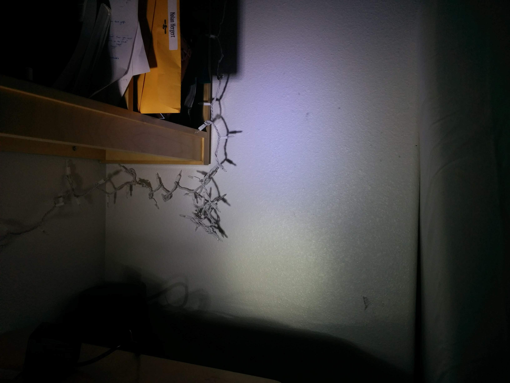 |
| 2 | Swatow Industries 84W!!! Was not 84 watts! Also was pretty yellow, which didn't show up well in image | 12W | 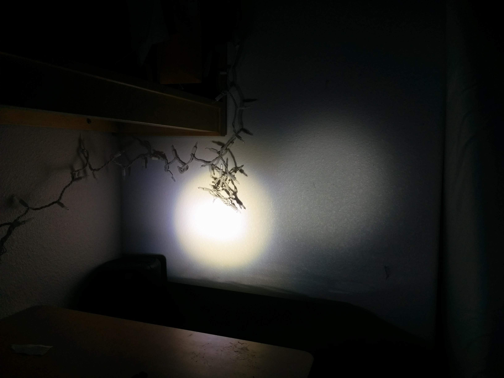 |
| 3 | LYLLA One Mode High Beam CREE | 6W | 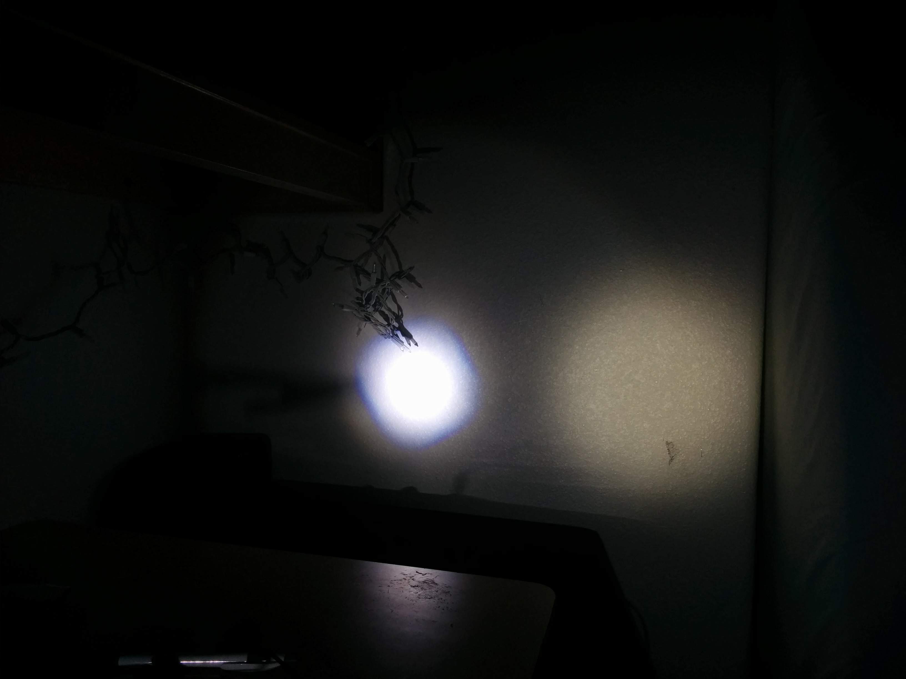 |
| 4 | TSIALEE 4“ 20W Motorcycle Fog Lights | 12W | 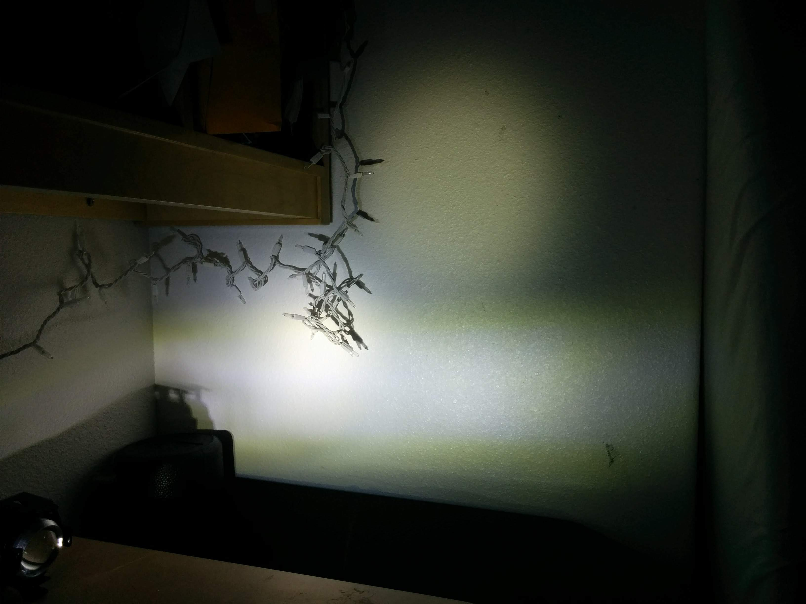 |
| 5 | Auxbeam 3 inch LED Light Bar … Spot Beam Brightest and most focused, $16 each. Not bad. | 12W | 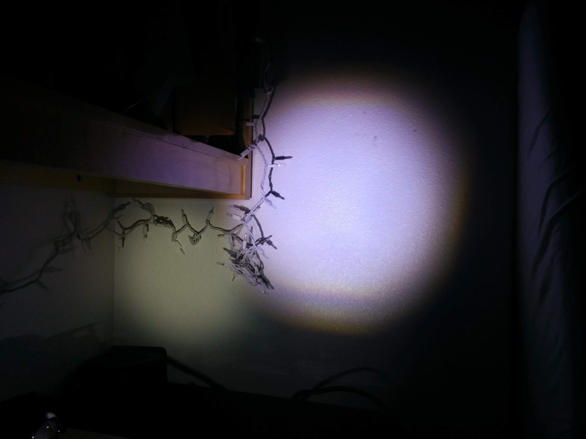 |
| 6 | Old School Bulb Lamp, drew 60 watts! | 60W | 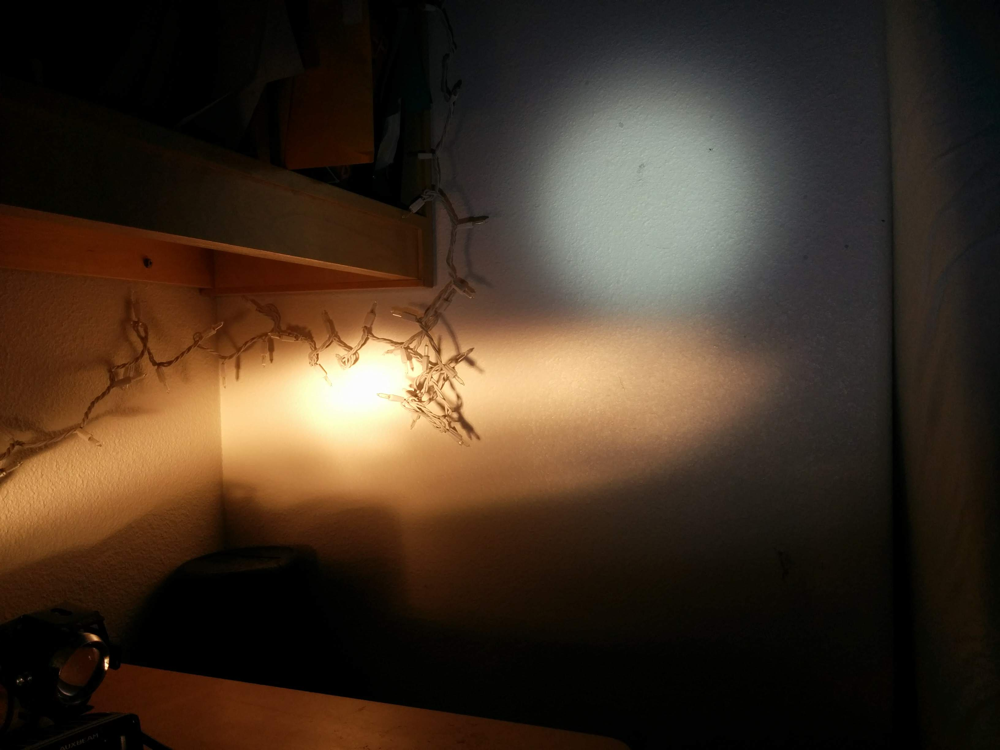 |
Be Seen
98% of the time a rear red blinker and a front white light / blinker with a reflective jacket is good enough. However I seemed to have a close call once a week in the winter darkness despite this. And they all were in a particular scenario….
<insert video>
It's the 90 degree angles, because reflectors and front-facing lights don't work!
Principles
- Reflective tape is understandably retro-reflective tape, which only works when the see-er has light emanating at close to the same angle as their eyes. <do a quick demo with small flashlight>. Only works when you are directly in front of the car. By the same token, blinky lights on your bike look bright off of reflective signs nearby, but you're the only person that will enjoy that extra visibility from your surroundings.
- A constant (even bright!) small light pointing forward is indistinguishable from a street light far away and can be hard to see at off angles. The larger the emitted light looks, especially from side views, the more chance you have of being seen and recognized as a cyclist.

{kind=link}
{kind=link}
{kind=link}
{kind=link}
{kind=link}
{kind=link}
{kind=link}
{kind=link}
{kind=link}
{kind=link}
{kind=link}
{kind=link}
{kind=link}
{kind=link}
{kind=link}
{kind=link}
{kind=link}
{kind=link}
{kind=link}
{kind=link}
{kind=link}
{kind=link}
{kind=link}
{kind=link}
{kind=link}
{kind=link}
{kind=link}
{kind=link}
{kind=link}
{kind=link}
- Kinda like the middle one, but it's almost too anime.
- “bang bang” (on off) blinky lights don't convey distance very well. Our eyes need time to place something. So an oncoming car might think you are farther away than you are and cut in front? Plus they are quite annoying, not so good either.
- Sine wave looked cool…
{kind=link}
- Still like this guy..

- Didn't work making it out of flat InstaMorph sheet. Too much ripple.
Making plastic parts
Check out book: Make Props and Costume Armor: Create Realistic Science Fiction adn Fanasy Weapons, Armor, and Accessories.
- Should detail a lot of stuff out
Might be able to make original using Pepakura. https://makezine.com/projects/halloween-2016-build-props-and-costume-armor-with-paper-pepakura-and-bondo/
- Or the usual 3d print
Mold making
Probably want to make a mother mold since it's such a huge thing to make.
YouTube Link! https://www.youtube.com/watch?v=GLkPkVMrvGo
- Don't need to use fiberglass or resin, but they do cure quickly. For cheap, can just use plaster, see above. Just make sure it dries out.
Composimold probably won't work for resin:
Composimold is great for food safe casting such as chocolate. Plaster is an ideal casting material as it is low exotherm and will not melt the mold. For food safe applications, Composimold Food Safe mold release must be used. This is a great starter material for learning the basics of molding and casting. It is ideal for simple, 1 sided parts or basic figurines. See our selection of silicone mold compounds for complicated resin casting.
Follow Adam Savage tutorial: https://makezine.com/projects/make-08/primer-moldmaking/.
- Would like to try ComposiMold initially because I'll screw up. Need 9+ pounds for full object, so just get 12 pounds of it
 Also mold release and bubble gone and 15% off coupon and free shipping!
Also mold release and bubble gone and 15% off coupon and free shipping!- Wait until after you have a design and people like it and you have it 3d printed?
- Also might want to remove bubbles with vibrating thing. Or vacuum chamber. They recommend 170F and waiting a while.
Casting
Probably going to go with either rotomolding:
- excellent Make article: https://makezine.com/projects/make-41-tinkering-toys/diy-rotocaster/. Maybe read instructable too.
- Seems a lot cheaper and less waste
- Much easier to get a consistent thickness
- Smooth-Cast 65D is recommended (cures white!), however,
or slush casting: YouTube Link! https://www.youtube.com/watch?v=oUxIkeqJ6ac
- Similar to roto molding, but less thickness accuracy apparently
- Need a fast curing resin.
or vacuum forming:
- Fast?
- Requires oven and vacuum
LED Diffusion
Looks like the pros use clear plastic infused with barium sulfate: https://www.prnewswire.com/news-releases/light-scattering-grade-barium-sulfate-248191361.html. Will see what it's like at TAP plastics.
I liked the polyethylene at Ace. Kinda milky
TAP plastics, they have:
- LED Light Panel Sheet, thin, easily bendable and probably adjustable. https://www.tapplastics.com/product/plastics/plastic_sheets_rolls/led_ligh_panel/598
- YouTube Link! https://www.youtube.com/watch?v=KqYq21fSfRU
- Huboptic makes good diffuse light masks, but pretty sure they're all with EL panels (somehow addressable!, probably with lots of small wires). Nice work, but too dark for my needs. But they do have some LED ones too….
- I really like InstaMorph, better diffusion when really thin. Hard but flexible. Moldable by hand. Maybe use hair dryer / heat gun to make outside smooth of fingerprints. Same as water for clay. Only downside is that potentially in a hot car it could lose shape. But I think for now for prototypes and showing to others and allowing creativity it's great.
- Make initial part of gear tooth, then put aluminum foil? around it. Then make flat sheets of instamorph with iron and baking paper and then form on top of part. Can make multiple that way and then stitch together.
- DIY Injection Molding for scaling up: CNC Mold ($400, https://www.youtube.com/watch?v=ZYFoWP-3MYE), Casted aluminum mold (https://www.youtube.com/watch?v=5LhHUBz9uL0).
- Not sure I want to do this, especially if it's limited to
- 2.5 mm minimum thickness for hand crank pressure
- Need to undo bolts by hand.
- But might be worth it!
Solutions
Bike Helmet
- On the Arduino, micros() and millis() are incremented by an interrupt, not sure which one. Unfortunately these are disabled when the Neopixel library is updating the strip, slowing down time. So your hip 100BPM rhythm turns into (HOW MUCH TIME??). You can either compensate and expect time to take (HOW MUCH LONGER?) or make things a little more complicated and write millis() yourself using timer1 or something. Maybe I'll try the former before I try the latter…
- Strain relief and solid connections are super important! Make initial LED strip connection with JST or waterproof electrical connection? https://www.banggood.com/15-Kits-2-3-4-Pins-Way-Sealed-Waterproof-Electrical-Wire-Connector-Plug-Motorcycle-Car-Auto-p-1168387.html
- A nice trick for not hot gluing everything for water proofness is to remember that water usually only travels downwards, unless you have a capillary action (tiny tubes). So as long as you have a drip-off spot on the wires, you don't need to super-environmentally protect the arduino. However, maybe this isn't true for very humid / salty climates like beaches or the south? (it never rains in San Diego, but the outside bike chains look horrible in a year or two)
- Will bike blinking lights / ambulances / etc. trigger photosensitive epilepsy? Generally, no.
- If you want 5V usb chargeable, monoprice's phone battery chargers are a great price.
Light facing towards you
Lights up your fluorescent vest! Currently have a focused AA light, might get a 2nd one. Tried out a Big Lots light, but it gets into eyes a little too easily for no benefit.
Don't get multi-mode AA flashlights. Poor ones only take a little jitter to change modes, and you want full brightness all the time anyways.
Spoke decorator (for fun)
So I wanted something that would work for that. And maybe spice up the ride home a bit for other commuters 
- Lighting with either white or UV 3w lights. Can make a mold with silicone sugru stuff, Proto Putty (silicone #1 + corn starch for easier handling)
- But why #1? Wouldn't any silicone work?
- Also, why silicone? That's kinda spendy. Can't I use something else, cheaper that also cures? Maybe ask at home depot. https://www.harborfreight.com/clear-silicone-sealant-46916.html
- HOT GLUE TO THE RESCUE
- “reed switches” are fragile and not sensitive. Going with hall effect sensor. Adafruit recommends us5881 for sensitivity, but I don't think I need that sensitive. 10-pack for a few bucks for an alternative, cheap.
- What about magnet? Hot glue to spoke? Use silcone as mold, doesn't stick to hot glue. Otherwise: https://www.amazon.com/Positz-Universal-Bicycle-Magnet-Standard/dp/B01LYEEKMZ/ref=sr_1_4?s=sporting-goods&ie=UTF8&qid=1538456568&sr=1-4&keywords=bicycle+magnet&dpID=41xNsTFdTrL&preST=_SY300_QL70_&dpSrc=srch
- Or large washers with bolt and nut. Glue/epoxy magnet onto end of nut.
- Or don't use it at all for now and have the speed constant
- See pulse lighting above
Hot glue
The usual craft stuff has a low “softness” temperature of 130F. Also our glue gun only goes to 280F. Increasing to 400F will help grippiness, but it'll still be soft in sunlight. So will call hot glue folks and see what they recommend / say.
Also best to heat up the metal or whatever, apparently, before connecting.
Is 3M tape better? As long as it's somewhat easily removable. Probably a lot less frustration for end user over buying a hotter hot glue gun.
Straws Glow / Reflection ?
I'm leaning towards much larger (1”?), lightweight tubing that I wrap/glue with outdoor fluorescent yellow flagging tape. Good source for cheap ($1.50 + $3.50 shipping). http://smithsafetysupply.com/fluorescent-glo-flagging-ribbons/
- Doubles as a cape/flag too…
- Another source, local. Hillsboro! Acme Tool. https://acmetool.com/index.jsp?path=product&part=604&ds=dept&process=search&qdx=0&ID=%2CBarrier.Flagging.and.Underground.Tapes%2Cdept-2BY
{kind=link}
Hard to find tubing that is outdoor proof and not transparent and cheap. Flagging tape it is!
= Straws = Found food fluorescent straws from Cash and Carry, but they faded over time and aren't that wide.
Clear or white/multicolored straws?
Mix in glow pigment with outdoor acrylic paint. Clear or white? Also, add reflective beads or not?
Brightest glow comes from the non-fluorescent pigment, as it takes up some of the brightness apparently. However, having the fluorescent is more important for this application. Show a picture / video!
Would like even application. Kinda tricky though. What application method?
- Hard to paint it on and be even.
- Some spray paint.
- A nice one is base coat of clear, then while tacky press onto bed of pigment. Then build up in layers if needed. Then finish off with final coat(s) of clear.
Not sure if I need resin or if I can get away with clear quick-setting paint. Will probably do final order through Art N Glow (they sell through amazon!) because I know I want fluorescent yellow and it's hard over amazon to make sure.
LED Diffusion notes
For some reason, perfectly diffuse/indirect light looks really cool to me.
{kind=link}
- White PEX flexible tubing.
Horn?
If you feel you need one to send a friendly “hi-ho neighbor” or worse, car horns are now in your reach and $20-$30! Nobody hears a bell for some reason…(show youtube video)
- Be sure to cover it from rain access. A thicker plastic bag or equivalent secured with tape or hot glue should work fine.
General bike safety tips
Avoid roads that have “close call” residential side streets with fences up to the edge of the sidewalk/street, both in daytime and nighttime. Show video?
- Cars will pull out, sometimes a little into the bike lane, just to be able to see if they can turn!
Plan on braking ahead of every side street. If there's no car coming, you don't need to brake. If there's a car, start braking lightly and look directly at the driver to see if they see you. If not, it's a lot easier to brake and be safe than it will be to get their attention or recover from getting hit.
2nd bike?
Pluses
About 1-2 days every few months my main bike is out of commission, and because I'm working and tired at the end of the day it takes some motivation to fix it! Hence, having a 2nd bike is kinda nice. Just take off and don't worry about it. As opposed to driving those days, which is $2-3 a drive.
Also beneficial is that someone else can borrow your bike and ride bikes with you easily. Jae or whoever.
Minuses
If space is an issue, not as fun to store it, make sure no one will steal it, etc.
Bicycle Light
The one I just bought is roughly the same as the Coast headlight I have, which is ~400 lumens. Definitely not 6000. 
- Also it's either .5 or ~1 amp, depending on the multimeter. So anywhere from 2.5 to 5 watts. I definitely want like >1000 lumens.
Would like rechargeable batteries, and around 1000 lumens would be really nice. Don't want to deal with mounting a car headlight though. Although it might be easiest to use a 12V thing since I have big batteries for it already.
Just buy several from Amazon and return the ones you don't want! Simple.
This style isn't the “spot” I'm looking for, I don't think. However, maybe better constructed?
{kind=link}
{kind=link}
I probably want 10 degrees, right? Also, looks cooler…
YouTube Link! https://www.youtube.com/watch?v=GURIBkndc8Q
- Looks like a better lens design
Can mount by just drilling holes in bike handlebars…? Prefer the clamp on style though…
Testing
Just leave them plugged into a 12V for a while, see how long it lasts? And how hot.
- Better with fan blowing.
- Double check internal heat sink and thermal paste?
Installation
Need to probably redo gaskets with silicone. Make sure thermal paste is applied well.
Wire used is 18 gauge, which is ok if separated for 15 amps, together for 3 amps. Should be good enough.
Univega
27“ wheels, will probably need a new freewheel / axle or just spring for a new wheel + cassette (https://www.universalcycles.com/shopping/product_details.php?id=84287&gclid=CjwKCAjwqarbBRBtEiwArlfEIOVY3H-0rS9kxLT5iNPqRUqoLT6vKRr-_XnvwMNb_rOvi-qkosUx0xoCHOcQAvD_BwE).
- Or can do a 700cc wheel? https://www.youtube.com/watch?v=L5pl0zrlHbg
Bike requirements
- Quick release
- Free or cassette. No more freewheel if possible, will last longer as point of tension is further out on axle.
- Should have road tires. Not sure about “performance hybrid” vs. road bike.
- Do I need a road bike, or are “flat bar” commuters ok? I like having several options for my hands, but braking is annoying on my current road bike. For a new bike, it's a $200-300 difference.
- I also like having the handlebars not as far out. Less easy maneuverability, but less opportunity to mistakenly twerk the bike while riding.
- Try to avoid getting a new bike though, Oregon new bike tax.
- Disc brakes or normal? Probably less maintenance, but more expensive. Braking distance is much better when wet.
- One guy preferred mechanical as there's less to go wrong and works better in long run. Have to brake twice as hard, but in the moment that won't be a problem.
- Apparently newer bike sizes are really just S, M, L, XL and correspond to effective top tube length (“reach” length, measured by seat to handles, I think) and not about the tube height underneath the seat. You just adjust the seat height to be correct.
- Aluminum is nice, but only all of 1-2 pounds lighter, though haha. I have that in belly fat!
- Screw in fender post stay things. Way solider fender.
Quick release or solid axle?
Cylinders are stronger than solid bars of the same weight: https://physics.stackexchange.com/questions/12913/hollow-tube-stronger-than-solid-bar-of-same-outside-diameter-o-d. Which is an unfair comparison, few people care about weight.
However, weight isn't really an issue. Long term durability is though. Apparently for this author's history, he's had nary a quick release failure and many solid axle failures. Interesting…
Long Distance
https://www.latriclub.com/11-training-guides/bike-training/1693-riding-la-to-san-diego-a-guide
- Salt
- Chamois cream, aka butt butter

Visibility
Daytime
Really need FLOURESCENT!
{kind=link}
Safety vest is easiest as it goes easily over other shirts. Sucks to have to buy 5 fluorescent shirts!
{kind=link}
$4 shirt at Decathlon. Too bad I'm not in SF. https://www.decathlon.com/products/mens-running-t-shirt-run-dry?adept_source=search-results
Maybe try Goodwill or others? See if they'll do $5.
Maybe cut off the sleeves for better circulation?
Nighttime: LED Helmet
Not effective enough during daytime.
Model on Scary monsters and nice sprites? https://youtu.be/WSeNSzJ2-Jw?t=1m20s
Sweat
Put backpack on rear rack, probably in panniers?
Almost no matter how hot it is or how hard I'm riding, I'm not really sweaty until I stop moving. That's because 1) I'm wearing bike clothes designed to wick moisture and evaporate it quickly, and 2) almost no matter what the weather is doing, while I'm moving I'm headed into a steady wind that quickly evaporates sweat.
So just do three things:
1) Wear sports clothing designed to wick moisture.
2) Slow down and cool down a kilometer or so before you reach work. Cruise around in slow circles in the parking lot if you must until you can stop and not feel sweaty.
3) Bring a change of clothing and once you've cooled down and stopped sweating, head for the bathroom and change.
Evaporated sweat doesn't smell. Only old sweat that has lingered and had time to allow bacteria and fungi to grow smells. So go ahead and sweat but just make sure you're dry when you change into your work clothing.
De-stinking smelly stuff: http://www.smellyfeetcures.com/how-to-de-stink-smelly-shoes/
- 140 water for ….
Baking sodadeodorizes but doesn't killFreezer, chills but doesn't kill- Wash away with soap?
- Rubbing alcohol kills, kinda expensive though
- Ozone treatment?! The website links to a dehumidifier + ozone smell killer for used clothing. Sounds good to me, but $120 and easily done for cheaper I think.
- Probably won't crack modern rubber compounds
Repairs
Great videos on how to do ball bearings, axle, freewheel, etc. https://www.youtube.com/watch?v=LNzN9oTQA8s
Freewheel is old style. Cassette is new style, less strain on axle. Probably need to buy a new rim though. https://www.youtube.com/watch?v=54bP6N9GLEc
On red mtb, offical width of bb for pedals is 124.5mm. Ok to cut it short 2mm. http://velobase.com/ViewComponent.aspx?id=7b55df65-8245-4679-94f2-03f3d7a1caf7
Brake adjustment: https://www.youtube.com/watch?v=iJeYSKUI-6A
- Unscrew the barrel adjuster fully (tightens it, counter-intuitively), then tighten fully, then screw barrel adjuster.
Fenders
Basically, want them to extend to the ground, generally.
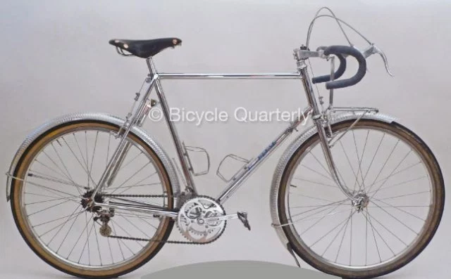, from https://janheine.wordpress.com/2012/11/19/why-we-dont-need-rain-bikes-any-longer/
{kind=link}
Rolled edges needed to prevent additional spray? Maybe just a lane of hot glue to provide a bump for the water to not want to go over…
Also, why not extend further up the front for avoiding front spray? Maybe they just don't go that fast?!
Bafang Electric Bike retrofit kit
Really great so far, except crank getting loose (alternative unicycle cranks here: https://electricbike.com/forum/forum/main-forum/general-discussions/16233-left-crank-always-loosens?p=16307#post16307) and squeak in engine area only when pedaling and motor running.
Resistance
Wind resistance dwarfs rolling resistance at >10mph by a large margin. Rolling resistance for a road gatorskin is maybe 10 watts lower than MTB tire (20 vs 30 watts). 10 watts on an electric bike is nothing.
My wind resistance test of moving from upright riding position to crouched seems to give me 1mph, which is about 30 extra watts. Interesting stuff…
{kind=link}
{kind=link}
{kind=link}
{kind=link}
Clothing
Consensus seems to be cheap light nylon/polyester jacket with air holes. No need for heavy jacket. Maybe spring for goretex stuff? https://bicycles.stackexchange.com/questions/1304/what-clothing-is-best-for-wet-weather-cycling-in-the-rain
- Bike shorts are nice as they don't look weird hanging up to dry like underwear. However, seeing bare butt shorts on the road is kinda weird. As long as you take a shower beforehand, any short should be good.
Wear the same clothes and let them dry out at work/home. 5 miles is short.
Bike Saddle
Basically leather is best/great. http://sheldonbrown.com/saddles.html.
- If you have pain, it's probably from not riding for a while
- Continued pain, figure something out.
- Selle Anatomica is preferred. Maybe Brooks?
Also, Jim Langley's site provides great historical bike seat designs: http://www.jimlangley.net/crank/bicycleseats.html 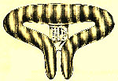
{kind=link}
and Cervelo engineering: https://www.cervelo.com/en/engineering-field-notes/the-four-and-a-half-rules-of-road-saddles 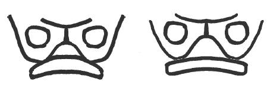
{kind=link}
Foam is designed to … (distribute the weight evenly? But how is that weight transferred evenly??)
- Something on its way to a perfectly molded hard seat that does distribute the weight evenly
- Also, foam squeezing down on veins and cutting off circulation surrounding the sit bones is not so good either.
- So, minimal foam around the sit bones, but maybe leather too.
- Angus says be sure to take the weight off your sit bones once in a while, around 1/3 the time for him. Gets air and circulation in there.
Preferred bike
- Disk brakes? Hydraulic?
- Needs a headlight for winter.
- Front shock is nice so you don't lose as much balance jumping curbs or running over big stuff. Angus' has front shock pretty stiff so you don't lose pedal power and he still has road tires. Maybe he just has separate rims, one for MTB tires for winter.
Mount light using two pieces of aluminum (maybe not wood, as it can rot?! But it's easy to practice on right now…) , cut spots for the glass posts on the back of the light on the back piece of aluminum and then sandwich the front piece using bolts onto holes drilled. Be sure to file all edges, maybe even round off the edges too. Need to probably pre-drill large holes so you can re-attach the hack saw in the hole and start cutting. Then can round with file. He recommended 1/8” and 1/4“ aluminum, not sure why not steel.
Weight
Probably good to balance front and rear pannier weight (or just have front pannniers??!) so you don't bust spokes.
- I prefer rear as well, though there are benefits to the front (less strain on rear of bike). https://www.cyclingabout.com/best-carry-load-bicycle-touring-front-rear-panniers/
Electric Bike
A cheap recommended hub motor is ebikeling. $150 shipped. And a portland company provides 36V batteries.
BBS02 programming: https://electricbike-blog.com/2015/06/26/a-hackers-guide-to-programming-the-bbs02/ and installation https://electricbike-blog.com/bbs02-installation/
48V battery/motor is 30% faster than 36V, but maximum assist speed legally is 20mph. And my 36V max of 41V is around 25mph. So, it's illegal / motorcycle territory
Charging Time
So…after a charge to 41V and a bike to work, it's at 38V. 80% charge is 36V, which is 20mph territory. I kinda like going faster, so I might keep it in 40V territory and sacrifice battery longevity, but improve it using low DoD.
| Time | Voltage |
|---|---|
| 0 | 38V |
| 5 | ??? |
| 18 | 39.4-7 V (I forgot) |
| 30 | 39.6V |
Positive
Get where you want to go, except faster.
$325 for motor in Beaverton. $200 for 36V battery in Vancouver.
Cheap to try out, can re-sell the parts for more or less the same price….eventually.
Still need to figure out:
- Covering when it is wet
- What to do with that cool electric car you just bought. How much is resale for it?
- VISA covers rental car collision, and health insurance covers your damage, but if you're at fault, you might need insurance for hurting the other person.
Multiply amps by volts to get KWh/hr. 150 watts is a sprinting cyclist, so .25KwhHr is ~2 hours of sprinting!
Bike fit
Do I really have a problem with this?? http://blog.bikefit.com/how-to-fit-a-road-bicycle/. Look at tonight w/ dad's cycle thing.
Helpful is to:
- Analyse the symptoms of your current bike.
- Note the effective Top Tube length and Head Tube length, and reach and stack of current bike
- Adjust to fit
YouTube Link! https://www.youtube.com/watch?v=Mwn7p_oiNV8
Need to really try the bike out.
Sizing
Competitive bicyclist calcaultor: https://www.competitivecyclist.com/Store/catalog/fitCalculatorBike.jsp#measures
| Name | Value |
|---|---|
| Actual Inseam (against pubic bone) | 32.75”-32.875“ |
Aggressive bikes force you to bend flat to use them.
Cost of Biking vs car driving
Lots of variables. Most calculators count gas cost but ignore food costs. Biking is more efficient energy-wise, yes, but food is expensive and humans don't do a great job of converting it to mechanical energy.
- Energy usage only for 3K miles, $500 for gas vs. $1200 for biking on Big Macs: https://bicycles.stackexchange.com/questions/5889/food-costs-compared-to-gasoline-riding-cross-country-usa
- Humans make poor energy generators: http://sustainability.blogs.brynmawr.edu/2012/07/31/understanding-energy-part-1/
- Hydroelectric dams and gasoline are cheaper in the long run
This one does a pretty good job of giving you a heads-up though of all the costs of a car. http://bicycleuniverse.info/
Amsterdam / Netherlands
YouTube Link! https://www.youtube.com/watch?v=zq28fU2AuMU
How the dutch got their cycling infrastructure: https://bicycledutch.wordpress.com/2011/10/20/how-the-dutch-got-their-cycling-infrastructure/
- They started out in the 1970's with lots of car lanes and had some protests when kids started dying
- Side note, I've heard apparently Amsterdam people would rather not bike, but you can't get anywhere in a car because of the pre-mentioned protests
- But I've heard counter-examples too. It'd be interesting to stop by!
This post is also very insightful. http://www.ski-epic.com/amsterdam_bicycles/
- No one wears helmets. His side note about following the crowd in terms of safety is interesting too: http://www.ski-epic.com/rant_helmets.html, although maybe “the crowd” in Netherlands doesn't wear a helmet so you feel uncomfortable doing it too!
- Giant locks
- Dynamo lights
- Formally dressed people
Biking extends your life vs. not exercising
How does a bike tend to stay up?
While gyroscopic and trail effects contribute, there's another effect. Involves lots of equations: http://www.nature.com/news/the-bicycle-problem-that-nearly-broke-mathematics-1.20281
Electric Assist
- Good water bottle battery pack. here
- Now…motor
Lock
3-foot chain ($3-4) + alarm padlock, video ($15) + AG13 batteries = good to go
Cable lock alarm is ok, but I'd rather have chain too. here
Really solid lock seems to be Abus locks, like this one
Power Grips
- DIY kit, but you need your own hardware. It only does the strap part. http://www.geocities.jp/good4u/power_grips.html
Flat prevention
Maybe ask Angus about this, but using a tough tire w/ liner is one option. Another is to put tire sealant in it.
- Buying Ribmo and Slime sealer. Slime lasts 4 years on the shelf and 2 years in the tube before it dries up. So don't buy too much…
- Slime yellow label is for cars with TPMS. Blue is tubeless tires. Red is tubes. https://www.slime.com/us/faq-details.php?id=4
- Other brands of sealant include Stan's, Ultraseal (seems to be for tubeless only though), and a UK company UltraSeal and OKO.
- Might be worth it to get tire sealant for car tires. Cheaper than carrying heavy tire. How long will it last in tire? Maybe with compressor inflator too just in case.
Bonding Rubber to Rubber
Camelbak bite valve
Final version needs to be non-toxic, as you put it in your mouth. Bond rubber to rubber.
Solvent dissolves rubber.
High usage temperatures (flats)
Remaining Q's
Do I have to powder the patch/tube after I'm finished?? Might be to prevent sticking to inside of tire
Vulcanization focus on the first few sentences.
- Is it “toxic”?
What are glueless patches made from? Is it good neough for long-term use?
- One source says it does a “aggressive adhesive making them a permanent repair” (Lezyne) but is that vulcanizing?
- Maybe call them or a more reputable company like REMA (who doesn't sell them)
- Against vulcanizing?!?!!
Contact adhesive is FINE - especially if your in a place that you get frequent punctures... and your epecting like 50 flats in 6 months. I tend to like clamping the patch and tube together while still a little wet, between two large coins and a set of foldback paper clamps / clips, and to leave them dry overnight - or over a cigarette lighter. - just warming the coins up a bit. I have also found that the solvent and the formulation of the adhesive, tends to make the tube rubber go crumbly and cracking - this usually becomes a problem after around 12 months - where as the "proper gum cement" makes patches that are more or less eternal, even when clamped up wet, and left to dry over night. So contact cement IS very good, but it will ROT HOLES through the rubber inner tube, and it will become a problem after a year or so....
The Steps
- Take off the wheel (it's usually hard to find one usually have to take off the entire t
- Pull off the tire using some tire levers.
- Find hole by pumping up tube to significant pressure and running hand around tube. Wet hands with soapy water? as escaping air will make bubbles / noises
- Patches: Circles from old tubes work just fine. Just sand or wire brush them first to expose the raw rubber.
- Don't use acetone! It will eat the rubber and probably your hand too!
- What about patch kit patches!? De-vulcanized?!?!
- Razor/rub off any rubber lines around hole to ensure a clean patch application
- Buff/clean off slightly larger than patch size around hole so that a solid bond is made to raw rubber and not the powder / junk around it. Sandpaper works best, but plastic ridged thing in patch kit might work too.
-
- you want the patch area clean
you want to use the sandpaper or scraper to scrape the rubber to expose some 'fresh' rubber the 'glue' has to dry absolutely before you patch (as it's not 'glue' in the sense we know it) a glued patch is as strong as the original rubber – or stronger.
- Apply only a thin layer? of cold vulcanizing fluid (bonds rubber? chemically). Let dry (blowing can help) minutes before
- TIP: You can safely buy any “tire cement” at an auto parts store ($5-8), as normal rubber cement will not hold at high <car tire> temperatures.
- Cheap tire kits usually use rubber cement????
- Rubber cement does not cross-link the rubber, making it easy to remove later using heat.
- modify the rubber chemically, making it good for other uses. To make a good bond, apply a thin layer and blow on it until _ texture (_ minutes). - Too long and it doesn't work?!?! * Once you increase the heat with speed and skidding it releases its grip, making it unsuitable for automobiles and high performance <mountain> bicyclists. - Apply pressure? - Wait for how long? _
- TIP: To get all the air out of a tube (for storage), put a small 1/4 cm object (rock or hard wood) into the cap, screw it on, then roll/fold up the tube into your desired shape. The air will be let out through the cap! Unscrew the cap and remove the object when done. Keep the object for future repairs.
- TIP: To put ornery tire back on, insert wrench and slowly raise it. It helps it stretch??
- Also, you can push the bead from the sides of the final region into the wheel well (the center) so that there's more slack on the final region. See here
Patches
Orange and black patches are de-vulcanized….
Remaining Questions
- How to keep cement lasting for a long time?
- Tire liners? Good/bad, sand the edges? more here
Setup
Angus' setup
Large front light (sealed beam headlight), similar to car size (hand-width) so you maximize retina space.
- Uses standard RC car batteries in series for ~14V, enough for typical car front headlights.
- People see you like a car, and you can see the road at night like a car!
- Sphere light maybe too small, but don't want a bright light that blinds people everywhere either.
- Use heat shrink tubing on battery connectors in a few layers for good strain relief.
- Probably can use hair dryer with partial closing of intake to heat it up further. Might trip the thermal fuse though…
- Need to still figure out a mounting method though…
- Brass is corrosion proof ?! Wow. Copper oxide is more conductive than copper >.> wow!
- A flashlight similar to this one. Main features:
- Durable
- Affordable
- The button is not sticking out or easy to press
- Easily purchased and recharged battery (One AA)
Blinksblinking is really annoying for oncoming cars
- AA/AAA flashlight mount
- Things take about 3 weeks to arrive with DealExtreme, and a bit less with MeritLine for some reason. However, shipping is free for both, which tells you something about the amount the components actually cost!
- Also, Iron City Bikes (right by Pitt) is great for tune-ups and bigger gear (like a helmet).